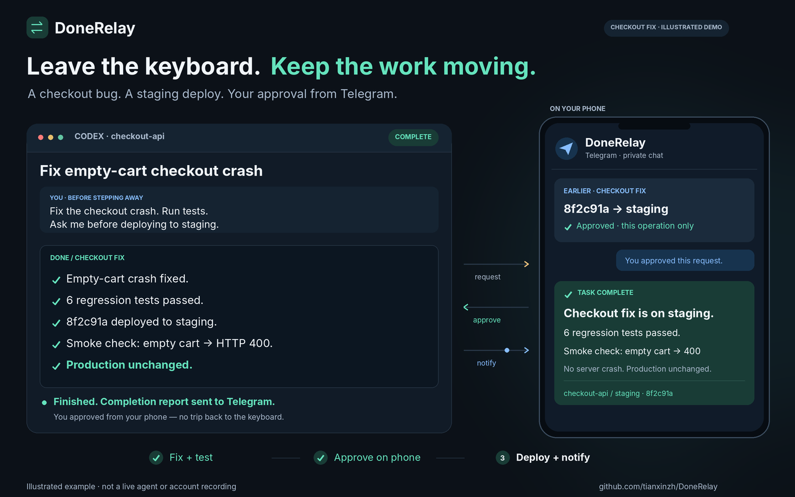

Your coding agent is waiting for a decision.
Reply from Telegram and keep the task moving.
Receive a completion update, answer a question, or approve one exact operation from your phone. DoneRelay connects your private chat to a still-running, integrated agent workflow.
Node.js 22+ · Portable Codex and Claude Code skill · Experimental native Codex runner
Run your bridge.
Keep messaging credentials on your own host. Give your agent only a private bridge connection.
Read the exact request.
Answer with its numbered command, approve once, or deny. Native host permissions still apply.
Keep the same caller waiting.
The workflow reads the result before acting. Silence, expiry, and a stopped session grant no approval.

Help test the first Telegram release.
Run one harmless task. Receive a message, answer a question, then tell us where setup got confusing. We’re aiming for three testers to complete setup independently and return for a second use.
Report your setup experienceKnow the current boundaries.
The bridge needs to stay running. Pending requests are cancelled after a restart. A skill does not take over unrelated terminals or bypass permissions.
WhatsApp Cloud API is experimental and requires business setup, a signed HTTPS webhook, START opt-in, and an active 24-hour reply window. There is no approved-template fallback. Weixin remains experimental. No official marketplace acceptance or Codex Cloud compatibility is claimed.